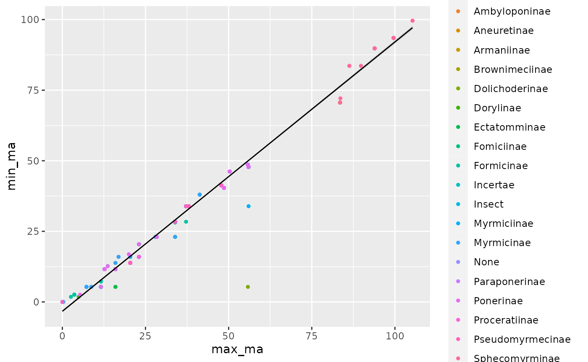

Parrish R Package
Katelyn Parrish
12/2/2021
Parrish_R_Package_Tutorial.RmdInstallation
Load in the required packages needed for this R package.
## ── Attaching packages ─────────────────────────────────────── tidyverse 1.3.1 ──## ✓ tibble 3.1.5 ✓ dplyr 1.0.7
## ✓ tidyr 1.1.4 ✓ stringr 1.4.0
## ✓ readr 2.0.2 ✓ forcats 0.5.1
## ✓ purrr 0.3.4## ── Conflicts ────────────────────────────────────────── tidyverse_conflicts() ──
## x dplyr::filter() masks stats::filter()
## x dplyr::lag() masks stats::lag()Now, install this R package:
devtools::install_github("kateparrish9887/R_package_Parrish")
library(ParrishRPackage)Let’s download some data for our package:
download.file("https://raw.githubusercontent.com/kateparrish9887/R_package_Parrish/master/data/Butterfly_data.csv", "/cloud/project/data/Butterfly_data.csv")
download.file("https://raw.githubusercontent.com/kateparrish9887/R_package_Parrish/master/data/FossilAnts.csv", "/cloud/project/data/FossilAnts.csv")
download.file("https://raw.githubusercontent.com/kateparrish9887/R_package_Parrish/master/data/combined.csv", "/cloud/project/data/combined.csv")To make the working examples work smoother, let’s load in the data frames and give them each a name:
butterfly <- read_csv("/cloud/project/data/Butterfly_data.csv")## Rows: 144 Columns: 5## ── Column specification ────────────────────────────────────────────────────────
## Delimiter: ","
## chr (1): ButterflySpecies
## dbl (4): Year, Day, SpringTemp, SummerTemp##
## ℹ Use `spec()` to retrieve the full column specification for this data.
## ℹ Specify the column types or set `show_col_types = FALSE` to quiet this message.
ants <- read_csv("/cloud/project/data/FossilAnts.csv")## Rows: 789 Columns: 9## ── Column specification ────────────────────────────────────────────────────────
## Delimiter: ","
## chr (6): taxon, subfamily, Tribe, Genus, Fossil, Notes
## dbl (3): reference_no, min_ma, max_ma##
## ℹ Use `spec()` to retrieve the full column specification for this data.
## ℹ Specify the column types or set `show_col_types = FALSE` to quiet this message.
combined <- read_csv("/cloud/project/data/combined.csv")## Rows: 34786 Columns: 13## ── Column specification ────────────────────────────────────────────────────────
## Delimiter: ","
## chr (6): species_id, sex, genus, species, taxa, plot_type
## dbl (7): record_id, month, day, year, plot_id, hindfoot_length, weight##
## ℹ Use `spec()` to retrieve the full column specification for this data.
## ℹ Specify the column types or set `show_col_types = FALSE` to quiet this message.Function for removing and changing NA values
This function allows you to change non-NA values if applicable, then dropping those NA values from a data set in one function. If your data set already contains NA values, then this function can simply be used to remove those values.
This is useful for data cleanup, especially if you have plans of plotting the data set. This function gives you a data set with no NA values, and some examples are below.
library(ParrishRPackage)
change_na_rm(ants, "None")## # A tibble: 23 × 9
## taxon reference_no subfamily Tribe Genus Fossil min_ma max_ma Notes
## <chr> <dbl> <chr> <chr> <chr> <chr> <dbl> <dbl> <chr>
## 1 Amblyopon… 53165 Ambylopon… Amblyo… Amblyo… Yes 20.4 23.0 Note
## 2 Solenopsi… 39931 Myrmicinae Soleno… Soleno… Yes 20.4 23.0 Note
## 3 Solenopsis 56112 Myrmicinae Soleno… Soleno… Yes 5.33 8.7 Note
## 4 Solenopsi… 38999 Myrmicinae Soleno… Soleno… Yes 28.4 33.9 Note
## 5 Solenopsi… 38738 Myrmicinae Soleno… Soleno… Yes 28.4 33.9 Note
## 6 Solenopsi… 38999 Myrmicinae Soleno… Soleno… Yes 28.4 33.9 Note
## 7 Solenopsi… 38738 Myrmicinae Soleno… Soleno… Yes 28.4 33.9 Note
## 8 Solenopsi… 38738 Myrmicinae Soleno… Soleno… Yes 28.4 33.9 Note
## 9 Solenopsi… 38738 Myrmicinae Soleno… Soleno… Yes 28.4 33.9 Note
## 10 Solenopsi… 38738 Myrmicinae Soleno… Soleno… Yes 28.4 33.9 Note
## # … with 13 more rows
library(ParrishRPackage)
change_na_rm(combined)## # A tibble: 30,676 × 13
## record_id month day year plot_id species_id sex hindfoot_length weight
## <dbl> <dbl> <dbl> <dbl> <dbl> <chr> <chr> <dbl> <dbl>
## 1 845 5 6 1978 2 NL M 32 204
## 2 1164 8 5 1978 2 NL M 34 199
## 3 1261 9 4 1978 2 NL M 32 197
## 4 1756 4 29 1979 2 NL M 33 166
## 5 1818 5 30 1979 2 NL M 32 184
## 6 1882 7 4 1979 2 NL M 32 206
## 7 2133 10 25 1979 2 NL F 33 274
## 8 2184 11 17 1979 2 NL F 30 186
## 9 2406 1 16 1980 2 NL F 33 184
## 10 3000 5 18 1980 2 NL F 31 87
## # … with 30,666 more rows, and 4 more variables: genus <chr>, species <chr>,
## # taxa <chr>, plot_type <chr>This function can also be used to strategically remove a column if needed. This is useful if a column in your data set was not recorded correctly, or if it simply needs to be removed for further data cleanup.
library(ParrishRPackage)
change_na_rm(butterfly, "Plebejus icarioides")## # A tibble: 126 × 5
## ButterflySpecies Year Day SpringTemp SummerTemp
## <chr> <dbl> <dbl> <dbl> <dbl>
## 1 Glaucopsyche lygdamus 1931 133 6.85 15.4
## 2 Cupido amyntula 1931 143 6.85 15.4
## 3 Cupido amyntula 1931 158 6.85 15.4
## 4 Glaucopsyche lygdamus 1931 212 6.85 15.4
## 5 Cupido amyntula 1933 142 5.4 14.9
## 6 Glaucopsyche lygdamus 1933 154 5.4 14.9
## 7 Glaucopsyche lygdamus 1933 156 5.4 14.9
## 8 Coenonympha tullia 1933 168 5.4 14.9
## 9 Coenonympha tullia 1937 186 6.4 15.2
## 10 Glaucopsyche lygdamus 1938 138 6.78 15.8
## # … with 116 more rowsFunction for plotting a line range plot
This function plots a line range graph by using the ‘ggplot2’ package.
This function may be useful for data set visualization for observations that contain a minimum and a maximum range of values, such as minimum and maximum temperature, or minimum and maximum fossil age. Both of these examples are below. This function gives a line range plot, with a minimum and maximum range on the y-axis for each x-axis value.
library(ParrishRPackage)
line_range_plot(butterfly, ButterflySpecies, SpringTemp, SummerTemp)
library(ParrishRPackage)
lm_num_cat(ants, min_ma, max_ma, subfamily)## `geom_smooth()` using formula 'y ~ x'
Function for plotting a linear regression model
This function is for plotting a linear regression model by using the ‘ggplot2’ package.
This function can be useful for data sets that are hypothesized to have a linear relationship between a numerical response and a numerical predictor. It can also be used to plot a linear model with an additional categorical predictor with the categorical predictor and the numeric response. This function produces a linear model scatter plot and includes a colored trend line.
If this function is used for both a numerical and categorical predictor with the numerical response, the categorical predictor will be represented by color on the scatter plot. An example of this is below.
library(ParrishRPackage)
lm_num_cat(ants, min_ma, max_ma, subfamily)## `geom_smooth()` using formula 'y ~ x'
If a categorical predictor is not needed, then only a numerical response and predictor can be put in the arguments of the function.
The ‘change_na_rm’ function that is also in this package can be used with this function to both change and remove NA values from the data set, then plot a linear regression plot.
library(ParrishRPackage)
ants %>%
change_na_rm("None") %>%
lm_num_cat(min_ma, max_ma)## `geom_smooth()` using formula 'y ~ x'